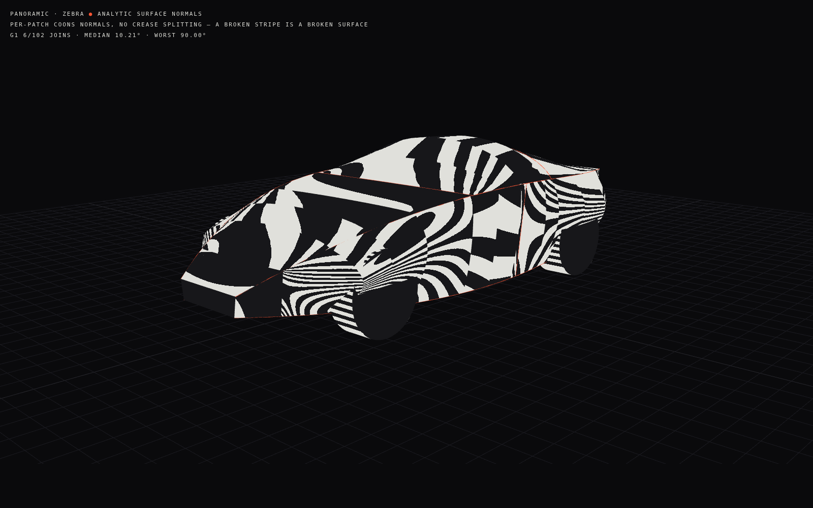
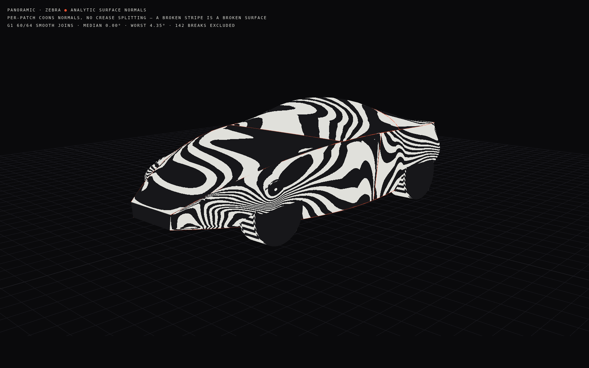

Panoramic P1
· analytic zebra — per-patch Coons normals, no crease splitting
Before · bilinear Coons —
G0
·
6 of 64 smooth joins G1 · median 3.16° · worst 61.02°

After · cross-boundary tangent field —
G1
·
60 of 64 smooth joins G1 · median 0.00° · worst 4.35°
